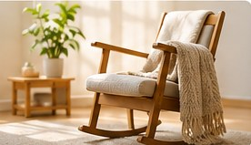
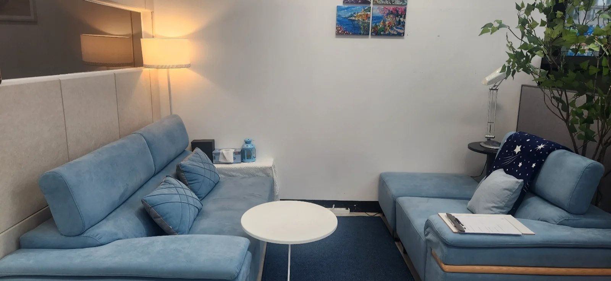

01
성인 심리상담
일상 속 불안과 우울, 스트레스, 자신감 저하, 대인관계의 어려움 등 혼자 감당하기 버거운 마음을 차분히 살펴봅니다.
우울 · 불안 · 스트레스 · 대인관계내 마음에 맞는 상담을 찾아보세요.
마음의 어려움은 저마다 다릅니다. 나에게 맞는 상담을 천천히 살펴보세요.
일상 속 불안과 우울, 스트레스, 자신감 저하, 대인관계의 어려움 등 혼자 감당하기 버거운 마음을 차분히 살펴봅니다.
우울 · 불안 · 스트레스 · 대인관계연인 사이의 오해와 갈등, 부부간의 소통 문제, 가족 구성원 사이에서 반복되는 관계의 어려움을 함께 이해하고 해결의 실마리를 찾아갑니다.
연인 관계 · 부부 갈등 · 가족 소통학교생활과 또래관계, 정서 및 행동 변화, 성장 과정에서 겪는 적응의 어려움을 아이와 청소년의 눈높이에서 살펴봅니다.
학교생활 · 또래관계 · 정서성격, 정서, 인지적 특성 등을 보다 깊이 이해할 수 있도록 심리검사에 관해 안내합니다. 검사 종류와 진행 방식은 상담 후 결정합니다.
성격 · 정서 · 인지
어떤 상담이 필요한지 아직 잘 모르시거나 위 항목에 없는 고민이 있다면 먼저 문의해 주세요. 상담 가능 여부와 절차를 안내해 드립니다.
상담 분야 문의 · 기타 고민※ 상담 프로그램별 진행 방식·비용·가능 일정은 센터에 문의해 주세요. 기본 상담은 60분이며, 심리검사와 집단상담은 별도 안내가 필요할 수 있습니다.
